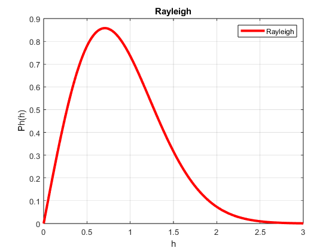
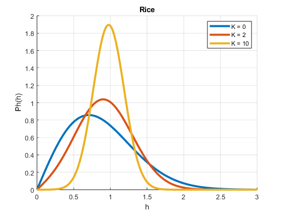
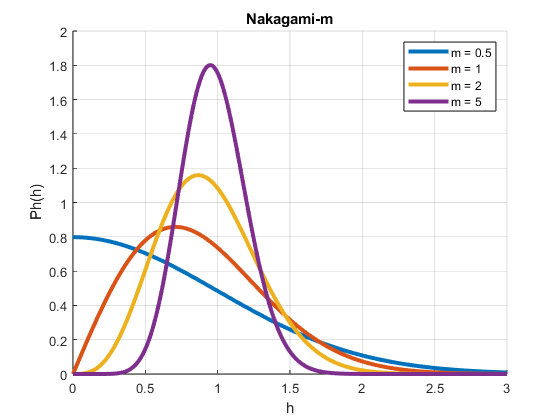

Contents
Questão 1:
colors = lines(4);
h = 0:0.001:100;
p_Ray = (2 * h) .* exp(-h.^2);
figure
plot(h, p_Ray, 'r', 'Linewidth', 3)
xlim([0 3])
grid on
xlabel('h')
ylabel('Ph(h)')
title('Rayleigh')
legend('Rayleigh')
K_values = [0 2 10];
figure
hold on
for i = 1:length(K_values)
K = K_values(i);
p_Rice = 2 .* h .* (K + 1) .* exp(-K - (K + 1) .* h.^2) .* besseli(0, 2 .* h .* sqrt(K * (K + 1)));
plot(h, p_Rice, 'Color', colors(i,:), 'Linewidth', 3)
end
xlim([0 3])
grid on
xlabel('h')
ylabel('Ph(h)')
title('Rice')
legend(arrayfun(@(K) ['K = ', num2str(K)], K_values, 'UniformOutput', false))
m_values = [0.5 1 2 5];
PrMed = 1;
figure
hold on
for i = 1:length(m_values)
m = m_values(i);
p_Nakagami = ((2 * m^m * h.^(2 * m - 1)) / (gamma(m) * PrMed^m)) .* exp(-m * h.^2 / PrMed);
plot(h, p_Nakagami, 'Color', colors(i,:), 'Linewidth', 3)
end
xlim([0 3])
grid on
xlabel('h')
ylabel('Ph(h)')
title('Nakagami-m')
legend(arrayfun(@(m) ['m = ', num2str(m)], m_values, 'UniformOutput', false))
  
Questão 2:
Ts = 0.557e-3;
Bs = 200e3;
fc = 900e6;
v = 120/3.6;
sigma = 25e-6;
c = 3e8;
lambda = c/fc;
fm = v/lambda;
Tc = 1/fm;
Bc = 1/(5*sigma);
disp('O desvanescimento é ')
if(Ts>Tc)
disp('Rapido');
else
disp('Lento');
end
disp('Em tempo e');
if(Bs>Bc)
disp('Seletivo');
else
disp('Plano');
end
disp('Em frequência');
O desvanescimento é
Lento
Em tempo e
Seletivo
Em frequência
Questão 3
atraso = [0 0.3 3.5 4.4 9.5 12.7].*1e-6;
PtdB = [0 -12 -4 -7 -15 -22];
PtLin = 10.^(PtdB/10);
tauMed = sum(atraso.*PtLin)/sum(PtLin);
tau2Med = sum((atraso.^2).*PtLin)/sum(PtLin);
sigma = sqrt(tau2Med - tauMed^2);
Bc = 1/(5*sigma);
disp(Bc)
8.9843e+04